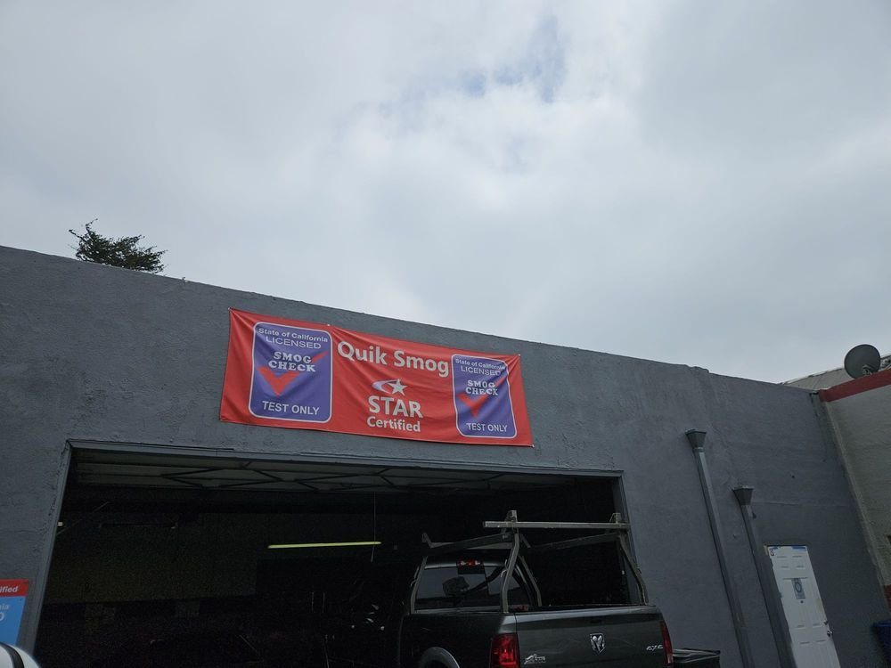
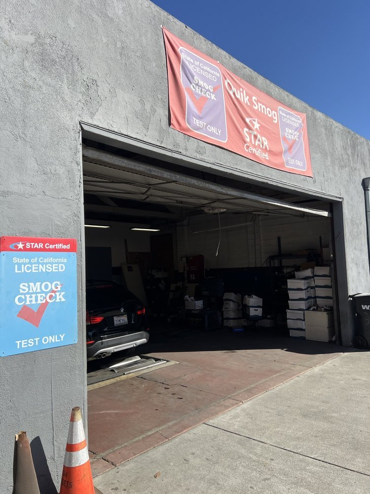

01 / SERVICE
STAR smog checks
Test-only inspections, including vehicles the DMV directs to a STAR-certified station.
A STAR-certified, test-only smog station on Mission Blvd. Get your DMV smog check done fast, with clear results and no repair upsell.

BOOK YOUR SMOG CHECK(510) 885-1001As a test-only station, the job is the inspection itself: an accurate, independent smog check so you can renew your registration.
Test-only inspections, including vehicles the DMV directs to a STAR-certified station.
Smog certificates sent electronically to the DMV once your vehicle passes.
Smog checks for buying, selling or transferring a vehicle.

Quik Smog keeps it simple: book online or drive up, get tested, and get back on the road. Because it’s test-only, there’s no pressure to buy repairs.
The storefront, the bay and the street. Select a photo for a closer look.
Photos from the business’s public Yelp listing. Final photo selection is subject to business approval. Photo source
“transparent and efficient smog test place that is STAR certified.”
Reserve a time online or call to check today’s wait.
Your vehicle and your DMV renewal notice if you have one. A valid ID and registration help speed things up.
STAR stations meet California’s performance standards. Some DMV notices require a STAR station; Quik Smog can test those vehicles.
No. This is a test-only station, so the inspection is independent from any repair shop.
This is an independent design concept prepared by Aansh Bali. Business information and images need the business’s approval before an official launch.
Book online. Get tested. Drive away.